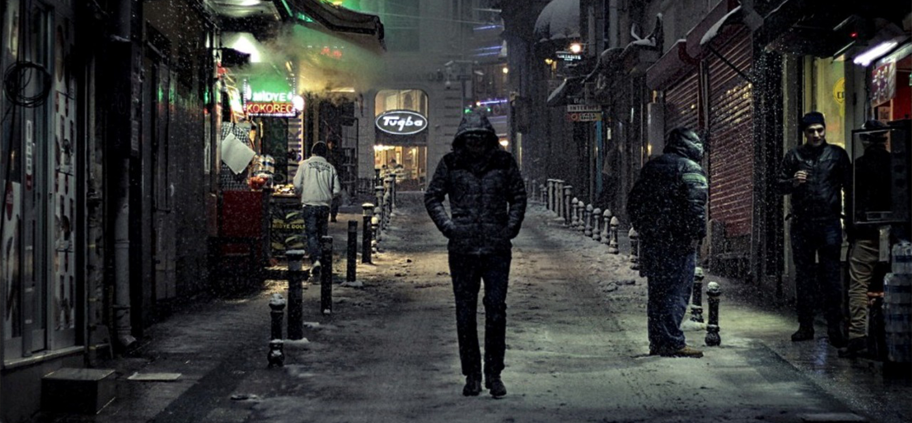

Первые шаги по улицам

В начале 2000х Великобритания является центром незримого мира. Как
минимум, незримой Европы. За кучку островов боролись кельты,
римляне, англосаксы и викинги, теперь же война ведётся в
оккультном подполье, а призом станет м”агическая власть, которая и
не снилась нашим отсталым предкам. Древние тайны Туманного
Альбиона сталкиваются с городскими легендами и конспирологией в
пьяной драке за пабом. От изолированных деревень до задымленных
подвалов Лондона, от лязга станков Манчестера до шепчущего прибоя
Северного моря, в Британии хватает отстойных мест, чтобы забросить
туда неудобную правду. Сотни людей знают правду и молчат, потому
что их никто не спрашивал.
Они среди нас. Их трудно отличить от Сознательных Граждан™, если
вообще возможно. В оккультном андеграунде встречаются и одержимые
провидцы, и учёные-отступники, гермафродиты-наркоторговцы, актёры,
третьеклассники, которые на завтрак едят свои пальцы,
маньяки-убийцы, верующие в Христа, почитающие картонные коробки,
люди, понимающие язык кошек, секретные сообщества, основанные
продавцами продовольственных магазинов, древние души, возрождённые
в новых телах, люди, которые не верят в высадку человека на Луне,
люди, верящие в то, что они сами высадились на Луне, и, в конце
концов, есть люди, которые верят в то, что они и есть Луна.
Это твой народ.
Ты один из них.
Ты обладатель своей уникальной истории. Такой нет ни у кого. Ты
видел привидений, демонов или твоего близкого человека вывернуло
наизнанку? Твой супруг оказался созданием из
мифов? Может быть ты сам фантастическая тварь? Так или
иначе - у вас есть кое-что общее.
Вы знаете секрет, недоступный более никому.
Что недостаточно просто верить во что-то.
Что необходимо самому стать этой верой.
Что мир - это ты, и когда ты меняешь себя - ты меняешь мир.
Вопрос веры
Религия, во всех её течениях и ответвлениях, ошибается. Нет,
конечно, идеи вроде Золотого Правила и Кармы весьма неплохи, есть
чему поучиться. Но они все не практичны. Бог не отвечает на
телефонные звонки. Будда, Аллах или Шива не дадут тебе словить
кайфа здесь и сейчас, а сам ты можешь купить этого дерьма на рейве
по 10 квидов за дозу.
Но как насчёт самого человечества? Вера в человечество может тебе
что-то принести. Этот мир сделан руками человека, по воле его, и
раздираем его борьбой. Нам некого винить кроме самих себя, но и
некого благодарить кроме как друг друга. Мы живём в мире, который
заслужили, потому что это мир, который мы сами создали. Мы создали
своих богов и вознесли их на небеса. Это воплощения идей
коллективного бессознательного: Мать, Истинный Король, Воин…Они
зовутся Архетипами. Каждый может стать одним из них, если выберет
путь аватара.
Порядок: аватары
Архетипы представляются далекими и недоступными богами. Аватары –
это их смертные воплощения на земле. Они способны точечно влиять
на мир, как снайперы-подражатели «Леона», как апостолы Христа, как
фанаты рок-звезд, активисты политических партий... Очень важно
придумать правильную метафору для Аватаров, потому что это их
основной инструмент. Метафоры строят мост между обычной
человеческой жизнью, состоящей из недоваренных пельменей и
симпатичных туфель на распродаже, и великой судьбой, уготованной
Архетипом.
Человек становится Аватаром через подражание. Ему не нужно БЫТЬ,
ему достаточно убедительно КАЗАТЬСЯ. Чем больше Аватар похож на
Архетип, тем больше Архетип способен изменить реальность для
своего последователя. Обычно «помощь свыше» принимает тонкие формы
психологического воздействия, интуиции и неслучайных совпадений.
Но некоторые могущественные инкарнации способны летать, пережить
обезглавливание или приказать автокатастрофе пойти в свою комнату
и подумать над своим поведением.
Подобные эпические вещи обычно являются прерогативой Богоходцев —
самых лучших последователей Архетипа. Естественно, рано или поздно
они собираются занять место своего бога-покровителя.
Хаос: адепты
Если Аватары — это люди, которые проходят фейсконтроль, потому что они правильно одеты, то
Адепты — это парни, которых побили вышибалы, а они кричат, что откроют свой собственный чертов
ночной клуб! Они идут против течения, иногда из сознательного противоречия, иногда потому, что
их природа чужда культурным нормам, и у них даже нет возможности это скрыть.
Каждый Адепт одержим чем-то важным, что большинство людей считает само-разумеющимся. И каждый
Адепт настаивает на том, что все, кроме него, ошибаются. Есть Адепты секса, которые не могут
делать это ради удовольствия или продолжения рода, но только как ритуал, дающий им ключи к
машине совпадений. Есть помешанные на бухле, которые находят истину на дне бутылки, и помешанные
на оружии, которые воспринимают огнестрел как талисман и символ гражданских прав.
Они сумасшедшие, или, по крайней мере, странные. Но что отличает Адептов от обычных шизиков, так
это то, что когда Адепт кричит в обычно равнодушное небо: «Будет не по-твоему, а
по-МОЕМУ!»…иногда небо уступает.
Нейтрал: Обычные и Сверхьестественные
Обычные люди, едва столкнувшись с оккультным андеграундом, становятся Осведомленными
обывателями. Они - совершенно заурядные, повседневные личности, но это только на
публике. Втайне они могут быть охотниками на вампиров, уличными мстителями, полицейскими или
оккультными исследователями. У них нет никаких слабостей, вроде табу или обязательных условий, и
они не должны стараться протереть дырку в ткани мироздания. Правда, они ее и не протирают: не
получают дары Архетипов или м'агические штучки от своей одержимости. Но они -- часть оккультного
андеграунда, преследуют свои цели. Всегда где-то рядом...Они могут быть опасны, как для Адептов,
так и для Аватаров, а еще они могут использовать артефакты и Сточную магию (смотри ниже).
Вообще-то, они единственные, кто могут полностью отдаться ритуальным практикам и древним
формулам. Они находят друг друга в Оккультном Мейнстриме (см. Первые шаги по миру), на
тематических форумах или неформальных сходках, а затем сбиваются в группировки/клубы/команды, а
могут быть разрозненной сетью профессионалов своего дела, как полисы из Синей Линии.
С другой стороны, Сверхъестественные личности. Их дар и их проклятие заключены в их чуждом
происхождении, будь они потомками йети, или путешественниками во времени или восставшими из
могил. Сверхи думают, что они особенные (и часто так и есть), каждый со своим даром и
проклятием, они могут даже не быть в курсе о существовании себе подобных, любых представителей
оккультного андеграунда, включая других сверхов. Часто они одинокие, проклятые изгои, которые
пытаются выжить в обычном мире и даже прогнуть его под себя.
Другая м`агия
Быть аватаром — значит зависеть от своей роли в обществе, а быть адептом — выбрать путь вечного
бунта. В обоих случаях нарушается баланс между социальной жизнью и индивидуальностью. При этом
тем, кто с упоением читал «Малый ключ Соломона» и выдержал кучу посвящений в мантиях и при
свечах, тяжело объяснить, что создавать оккультные чудеса можно и не рисуя пентаграммы в подвале
под пение на мёртвых языках, а достаточно вести себя в обществе либо как все, либо как изгой
эпических масштабов. Впрочем, чепуха со старыми гримуарами и глазами тритона тоже работает.
Любой может совершить ритуал. Правда, большинство ритуалов - это остатки Старых Путей,
модернистской м'агии или даже ветхих традиций, давно утративших м’агическую силу. Когда-то они
были частью отдельной веры, подобно первобытной м'агии, христианскому экзорцизму или
каббалистическим чудесам. Они могли даже сохранить символические атрибуты своего происхождения.
Например, западная Герметическая м'агия существует сейчас только в форме отдельных ритуалов, и
они переполнены кровавыми жертвоприношениями, горящим ладаном, полными лунами и прочими
атрибутами традиционного сверхъестественного фольклора.
Теперь большинство ритуалов – это просто осколки наследия некогда могучих верований, и с каждым
веком все меньше и меньше из них сохраняют хоть какое-то подобие силы, отчего становятся крайне
редкими. Существует также группа удивительных ритуалов, не связанных ни с одной культурой и
верой. Некоторые уподобляют их "чит кодам" из компьютерных игр, "эксплойтам" в компьютерной
безопасности, удачным перемычкам в каркасе нашего Космоса.
Но если ты не хочешь быть аватаром, адептом, или годами изучать заплесневелые фолианты, ища
рабочий ритуал-другой, тебе подойдёт то, что называют сточной м’агией. Она не так сильна и
быстра, как м’агия адептов, и не так надёжна и проста, как фокусы аватаров. Она сложная,
медленная и трудоёмкая, а её эффекты столь неуловимы, что скептики легко объясняют их
предвзятостью свидетелей. И всё же она есть. Сточная м’агия меняет мир. Если всё сделать как
надо, вероятность событий станет выше или ниже. Эта м’агия не даёт уверенности в том, что при
игре в покер червовая дама выпадет тебе на ривере третьей в раздаче. Зато она позволит играть с
равными шансами против казино. Адепты и аватары могут использовать сточную м’агию, но в 99%
случаев не хотят.
Множественная м`агия
Три формы м'агии не взаимоисключающи. Ты можешь быть адептом, инкарнацией и в придачу
использовать ритуальную м'агию. Теоретически, ты мог бы стать Королем Магов. На самом деле, ты
фактически был бы буйнопомешанным. М'агия и адептов, и аватаров имеет свои табу, и немногие из
них согласуются настолько, чтобы исключить противоречия. В оккультном андеграунде ходят истории
о ком-то, известном как Урод (его еще зовут Фриком), кто является одновременно
адептом-Эпидеромантом и аватаром Мистического Гермафродита. Если истории правдивы, Урод
необычайно могущественно, непостоянно, опасно и ужасающе. Но чтобы встать на этот путь, оно
должно было быть одержимо, параноидально и переполнено ненавистью. В мире нет ни единого
человека, которого оно могло бы назвать другом. Это цена, которую оно заплатило за власть над
обоими путями.
Не все новости плохие. Ритуальная м'агия легко может быть использована адептами и инкарнациями.
В действительности им даже проще использовать ритуальную м'агию, чем остальным людям
Вдобавок к разной человеческой м’агии есть м’агические места, предметы и явления, которые
никогда не были людьми, но желают ими стать. Астральные паразиты, пробирающиеся в смертный мир.
Пауки, рисующие паутиной портреты, и комиксы, читающие покупателей, пока их края не истреплются
и не засалятся. Бывают кучи соединённых конечностей и протезов, с грохотом ползающие по ночам в
проклятых больницах, свидетельства о которых персонал считает массовым бредом. Есть места,
пожирающие машины и испражняющиеся вымершими животными. Лощины с призраками, разумные пчелиные
ульи и городские легенды, делающие вашего героя своей частью. Дюки пытаются разгадать эти тайны,
Спящие пытаются их контролировать, а простые смертные внезапно смертны, чтобы
продемонстрировать, как устроены такие монстры.
›
Текст спойлера
Первые шаги по миру
>>>